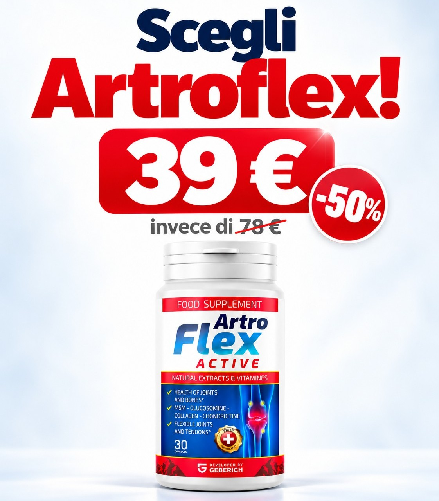

Formula completa
Glucosamina, condroitina, MSM e collagene marino insieme a vitamina C e cinque estratti vegetali: tutto in 3 capsule al giorno.

ArtroFlex Active è un complesso innovativo progettato per mantenere la salute delle articolazioni. Contiene condroitin solfato e collagene marino, due componenti chiave che aiutano a ridurre il disagio e a ripristinare i tessuti articolari.
Le malattie articolari, come artrite, artrosi, poliartrite, coxartrosi e osteocondrosi, stanno diventando sempre più frequenti e colpiscono non solo gli anziani. Il ritmo di vita moderno, la vita sedentaria e il carico sulle articolazioni portano al loro precoce deterioramento.
La situazione è particolarmente difficile nel nostro paese: oltre il 50% della popolazione affronta problemi articolari. Tuttavia, l'uso frequente di rimedi inefficaci o dubbi, che possono peggiorare le condizioni delle articolazioni, rappresenta una grave minaccia.
ArtroFlex Active è disponibile solo sul sito ufficiale.
Ciò consente di evitare costi pubblicitari aggiuntivi e ricarichi delle farmacie, oltre a offrire ai consumatori un prodotto di qualità a un prezzo più accessibile.
Gli studi clinici hanno confermato che ArtroFlex Active favorisce il ripristino del tessuto cartilagineo in pochi mesi. È significativamente più efficace degli analoghi, anche di quelli il cui prezzo è due o tre volte superiore. Grazie alla formula attentamente selezionata, contenente polvere di madreperla ricca di calcio ed estratti vegetali attivi, non maschera i sintomi, ma aiuta a ripristinare i tessuti articolari danneggiati e a mantenere la salute delle articolazioni per molti anni.
Integratore alimentare in capsule con 10 componenti in un'unica formula, sviluppato da Geberich.
Glucosamina, condroitina, MSM e collagene marino insieme a vitamina C e cinque estratti vegetali: tutto in 3 capsule al giorno.
Il condroitin solfato attiva la produzione di acido ialuronico, che rafforza i tessuti connettivi come cartilagini, tendini e legamenti. Ha un'azione analgesica e antinfiammatoria, favorisce la rigenerazione della cartilagine. Il collagene marino arricchisce le articolazioni con gli elementi necessari, supporta l'elasticità e la resistenza del tessuto connettivo e, così, consolida i risultati raggiunti.
Boswellia, curcuma, zenzero e artiglio del diavolo sono estratti vegetali che sostengono la normale funzionalità articolare.
La vitamina C contribuisce alla protezione delle cellule dallo stress ossidativo. Una dose giornaliera ne contiene 80 mg (100% VNR).
| Ingrediente | Quantità |
|---|---|
| Glucosamina solfato 2KCl (da crostacei) | 300,0 mg |
| MSM (metilsulfonilmetano) | 300,0 mg |
| Zenzero, estratto 4:1 | 225,0 mg |
| Boswellia serrata, estratto 65% | 159,0 mg |
| Condroitina solfato (da pesce) | 135,0 mg |
| Collagene marino (da pesce) | 112,8 mg |
| Vitamina C (acido L-ascorbico) | 80,0 mg 100% VNR* |
| Curcuma, estratto 10% di cui curcumina 6 mg | 60,0 mg |
| Pepe nero, estratto 95% di cui piperina 2,85 mg | 9,0 mg |
| Artiglio del diavolo, estratto 20% di cui arpagosidi 1,2 mg | 6,0 mg |
*VNR: valori nutritivi di riferimento. Contiene crostacei e pesce.
Modalità d'uso: 2 capsule a pranzo e 1 capsula la sera, con un bicchiere d'acqua. Dose giornaliera: 3 capsule.
Se assumi farmaci, lascia trascorrere almeno un'ora tra l'assunzione dell'integratore e quella del medicinale: si sconsiglia di assumerli contemporaneamente.

1 confezione da 30 capsule:
78,00 € 39,00 € −50%
Percorso da 3 confezioni o più: sconti ancora maggiori. Te li comunica lo specialista durante la chiamata.
Il prezzo precedente è il prezzo più basso applicato nei 30 giorni precedenti la promozione. Spedizione a parte, comunicata prima della conferma dell'ordine.
Lascia il tuo nome e numero di telefono: un nostro specialista ti chiamerà, parlerà con te del tuo problema alle articolazioni e ti aiuterà a scegliere il percorso di ArtroFlex Active più adatto.
Grazie! Un nostro specialista ti chiamerà al numero indicato per parlare del tuo problema e aiutarti a scegliere il percorso di ArtroFlex Active più adatto a te.
Numero indicato:
No. La richiesta serve a parlare con uno specialista del tuo problema e a scegliere insieme il percorso di ArtroFlex Active più adatto. L'eventuale acquisto lo decidi tu, al telefono.
Uno specialista di Geberich. Maggiori dettagli nell'informativa privacy.
Una confezione contiene 30 capsule: con la dose giornaliera di 3 capsule dura 10 giorni. Un percorso da 3 confezioni copre un mese: per questo è proposto con uno sconto maggiore.
Alla consegna, in contanti, con carta bancaria o con bonifico. Nessun pagamento anticipato.
Lascia trascorrere almeno un'ora tra l'integratore e il medicinale. Se assumi farmaci con azione simile o hai dubbi, chiedi al tuo medico o farmacista.